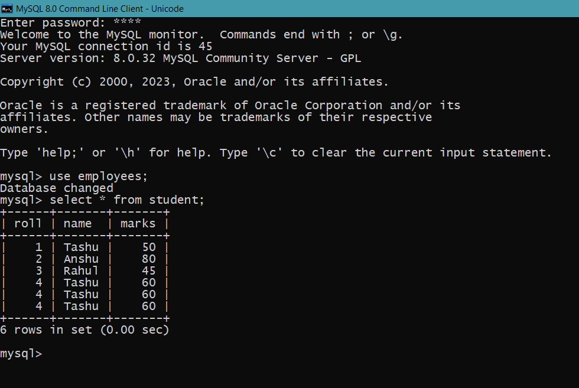
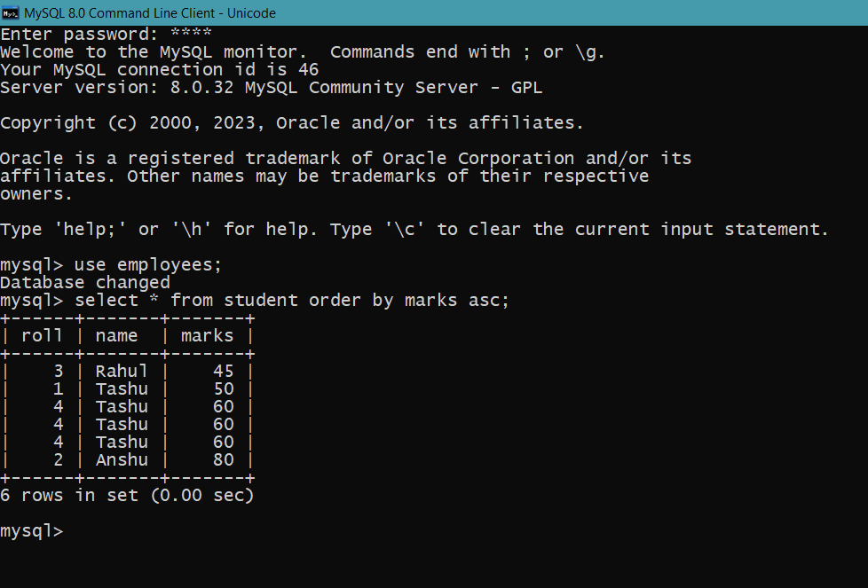

MySQL ORDER BY Clause
The MYSQL ORDER BY Clause is used to sort the records in ascending or descending order.
Syntax
SELECT expressions
FROM tables
[WHERE conditions]
ORDER BY expression [ ASC | DESC ];

Example
Select * from student order by marks asc;
